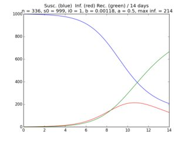

Disease Spread
Points: 6 kyu
Kata ID: 566543703c72200f0b0000c9
In 1978 the British Medical Journal reported on an outbreak of influenza at a British boarding school. There were 1000 students. The outbreak began with one infected student.
We want to study the spread of the disease through the population of this school. The total population may be divided into three:
the infected (i), those who have recovered (r), and
those who are still susceptible (s) to get the disease.
We will study the disease on a period of tm days. One model of propagation uses 3 differential equations:
(1) s'(t) = -b * s(t) * i(t)
(2) i'(t) = b * s(t) * i(t) - a * i(t)
(3) r'(t) = a * i(t)
where s(t), i(t), r(t) are the susceptible, infected, recovered at time t and
s'(t), i'(t), r'(t) the corresponding derivatives.
b and a are constants:
b is representing a number of contacts which can spread the disease and
a is a fraction of the infected that will recover.
We can transform equations (1), (2), (3) in finite differences
(https://en.wikipedia.org/wiki/Finite_difference_method#Example:_ordinary_differential_equation)
(http://www.codewars.com/kata/56347fcfd086de8f11000014)
(I) S[k+1] = S[k] - dt * b * S[k] * I[k]
(II) I[k+1] = I[k] + dt * (b * S[k] * I[k] - a * I[k])
(III) R[k+1] = R[k] + dt * I[k] *a
The interval [0, tm] will be divided in n small intervals of length dt = tm/n.
Initial conditions here could be : S0 = 999, I0 = 1, R0 = 0
Whatever S0 and I0, R0 (number of recovered at time 0) is always 0.
The function epidemic will return the maximum number of infected
as an integer (truncate to integer the result of max(I)).
Example:
tm = 14 ;n = 336 ;s0 = 996 ;i0 = 2 ;b = 0.00206 ;a = 0.41
epidemic(tm, n, s0, i0, b, a) --> 483
Notes:
- Keeping track of the values of susceptible, infected and recovered you can plot the solutions of the 3 differential equations. See an example below on the plot.
